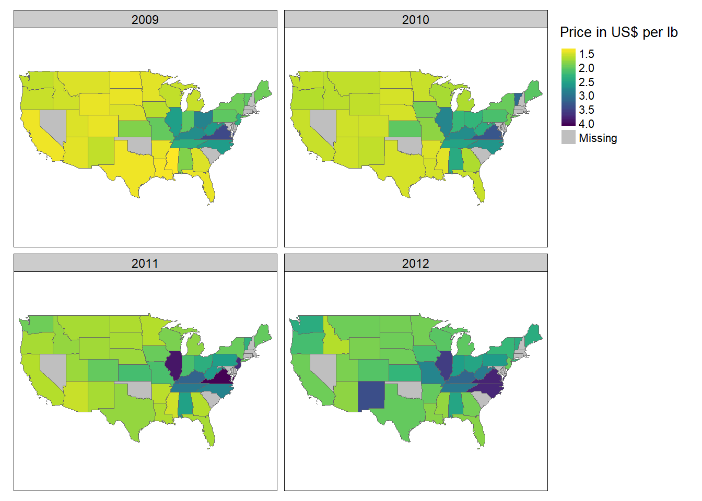

2 tmap
Thematic maps are geographical maps in which spatial data distributions are visualized. This pack-age offers a flexible, layer-based, and easy to use approach to create thematic maps, such as choropleths and bubble maps. It is based on the grammar of graphics, and resembles the syntax of ggplot2.
2.1 Static maps with tmap
Most often, geographical data are displayed using static maps that can be saved as .png or .pdf files. Originally, data could only be visualized in this way in R, but the development of new packages, especially sp, has created new possibilities for displaying this data. Despite new methods like interactive maps, static maps are still the main focus of geospatial data visualization in R.
As mentioned above, the syntax of tmap is similar to that of ggplot2. This includes a strict separation between data and aesthetics. At the beginning, tm_shape() is passed a dataset, followed by one or more levels that define the type of display. Examples are tm_fill() and tm_dots() to plot data as polygons or points.

Figure 2.1: A simple example
The passed object ‘bavaria’ has the class ‘sf’ and represents the individual cities and districts of Bavaria. tm_fill() fills the individual polygons, resulting in a filled outline of Bavaria. tm_borders() draws the borders of the individual polygons and tm_polygons() combines the two functions and displays both at the same time. The + operator can be used to add additional layers to visualize different types of geospatial data.
With tmap objects can not only be plotted but can also be saved as objects of the class ‘tmap’.
## [1] "tmap"The saved object can be easily extended or retrieved at a later time in the console. Furthermore, additional layers can be added to the object with tm_shape(), which allows several maps to be combined into one.
The following code example is based on the above code, which represents a height grid of Europe. First the border lines of the individual states are added, followed by all cities with more than one million inhabitants.
map_europe2 <- map_europe + tm_shape(europe_shape) + tm_lines(alpha = 0.3)
map_europe3 <- map_europe2 + tm_shape(cities) + tm_dots(size = 0.3)Figure 2.2: Use of several layers
By saving individual maps as objects, they can also be displayed next to or on top of each other using the ’map_arrange()` function.
The user is not limited in the number of layers he is able to add. It should be noted, however, that too much information can quickly overwhelm the viewer.
For the previous plots the default aesthetic settings of tmap were used. To create visually appealing maps, these can be overwritten. Two main types of map aesthetics exist:
- Those that change with the data
- Those that do not change with data
Compared to ggplot2 no helper function (aes()) is used to customize the design of the map. Instead, the arguments are passed directly. Some of the most useful arguments are the fill color (col), transparency (alpha), line width (lwd) and line style (lty).
bav1 <- tm_shape(bavaria) + tm_fill(col = "aquamarine")
bav2 <- tm_shape(bavaria) + tm_fill(col = "aquamarine", alpha = 0.5)
bav3 <- tm_shape(bavaria) + tm_polygons(col = "aquamarine", border.col = "darkolivegreen")
bav4 <- tm_shape(bavaria) + tm_borders(lwd = 2)
bav5 <- tm_shape(bavaria) + tm_borders(lty = 4)
bav6 <- tm_shape(bavaria) + tm_polygons(col = "#E2E2E2", border.alpha = 0.5, lwd = 3)
tmap_arrange(bav1, bav1, bav3, bav4, bav5, bav6, ncol = 3)
Figure 2.3: Use of various arguments
Another difference to ggplot2 is that the variable names must be passed as characters and the `$’ operator cannot be used.
## Error: Fill argument neither colors nor valid variable name(s)The desired graphic is obtained with the following code:

Figure 2.4: Population development in Bavaria from 2011 to 2015

Figure 2.5: The same map in base R
The example of the last two maps shows that tmap automatically selects a color palette and intervals. To use other intervals, you can either pass manual bins to the breaks' argument or usen’ to specify the number of bins.
tm_shape(bavaria) + tm_polygons(col = "mean_age")
tm_shape(bavaria) + tm_polygons(col = "mean_age", breaks = c(40, 42, 46, 54))
tm_shape(bavaria) + tm_polygons(col = "mean_age", n = 3)Figure 2.6: Use of the breaks and n arguments
An alternative is the ‘style’ argument. This allows the user to automatically create breaks by specifying algorithms. Among others, the following styles can be passed:
style = pretty: Rounds interval boundaries to whole numbers. Default setting.style = equal: Splits the variable into intervals of equal length. Should only be used if the variable follows an uniform distribution.style = quantile: Splits the variable into quantiles. Consequently there are the same number of observations in each interval.style = jenks: Identifies groups with similar values and maximizes the difference between them.style = cont: Displays many colors over a continuous palette.style = cat: Colors each category individually for categorical data.
Other possibilities are cat, fixed, sd, kmeans, hclust, bclust, and fisher.
Figure 2.7: Unemployment rate in Bayern und Verteilung von Städten und Landkreisen
A further possibility to influence the appearance of a map is to choose the colour of the individual classes. The user can do this using the palette argument. The name of a palette from the RColorBrewer or Viridis package can be passed to this argument. If the order of the palette should be reversed, a - can be added at the beginning of the character.
tm_shape(bavaria) + tm_polygons(col = "unemployment_rate", palette = "viridis")
tm_shape(bavaria) + tm_polygons(col = "unemployment_rate", palette = "-viridis")Figure 2.8: Reversing a palette
midpoint).
- Categorical palettes: Easily distinguishable colors, ideal for categorical data
Alternatively, a custom palette can be passed, for this purpose HEX codes may be used.
You should pay attention to the selection of your colours: Colors transfer feelings. For example, red is associated with negative things, while green is associated with positive things. This example can also be extended to geographical features. Green is associated with forests and blue with bodies of water. In addition, when using a palette, it should be clear which colour stands for lower or higher values. In order for the widest possible range of people to be able to interpret a map, care should also be taken, if possible, to ensure that colour-blind people can identify the differences between classes.
Figure 2.9: Sequential, diverging and categorical palettes
Besides the possibility of changing the map itself, there is also the option of editing other elements of the graphic. With the help of functions like tm_compass(), tm_scale_bar(), tm_logo(), tm_style() and tm_layout(), maps can be extended by various elements. The first three of these functions can be used to add a compass, a scale bar and images.
tm_shape(bavaria) +
tm_polygons(col = "type", pal = c("white", "skyblue")) +
tm_logo("../datasets/bavaria.png", height = 2) +
tm_scale_bar(position = c("left", "bottom"), width = 0.15) +
tm_compass(position = c("left", "top"), size = 2)Figure 2.10: Map of Bavaria with additional elements
With the help of tm_layout() a variety of properties of the maps can be changed. You can add a title or a background color, change the scaling or remove the border and the legend.
tm_shape(bavaria) + tm_polygons()
+ tm_layout(title = "Bavaria", bg.color = "#228B22")
tm_shape(bavaria) + tm_polygons()
+ tm_layout(scale = 3, frame = FALSE)
tm_shape(bavaria) + tm_polygons(col = "type")
+ tm_layout(frame.lwd = 3, legend.position = c("left", "bottom"))
tm_shape(bavaria) + tm_polygons(col = "type") +
tm_layout(inner.margins = 0.2, legend.show = FALSE)Figure 2.11: Some layout settings
You can also change the font and font size, as well as further customize the look using visual filters, such as sepia or black and white.
By using tm_style(), predefined styles can be used to give cards an old-school look, or to optimize them for color-blind people, for example. An overview of the available styles is provided by the tmap_style_catalog() function, which creates a folder containing different maps in the current working directory.
tm_shape(bavaria) + tm_polygons(col = "type") + tm_style("classic")
tm_shape(bavaria) + tm_polygons(col = "type") + tm_style("col_blind")Figure 2.12: Classic and colour-blind style
Sometimes not all information can be displayed effectively with a single map. With the help of the print() and viewport() functions, several smaller maps can be combined to form one large one. In the following example, the cities and municipalities of the Rosenheim district are shown. Since not all viewers may know where the county is located, a map of Bavaria with a bounding box around the county is added.
Figure 2.13: Towns and communities of the County of Rosenheim
Another field of application for this type of map is the representation of regions that are situated far away from each other. In the following example, all 50 states of the USA are displayed in one graphic, taking into account the sizes of the individual states. Since Hawaii and Alaska are too far away from the remaining 48 states, a single map would not be the best solution, thus three maps are created and merged. First, the projection of the 48 states is changed to an equal area projection, which the other two datasets already have.
To display the maps as true to their size as possible, the difference between the largest and smallest y-value is calculated for each of the three maps. For this purpose, bounding boxes are used. Then the factors by which the maps of Alaska and Hawaii are larger or smaller than those of the remaining 48 states are calculated.
us_states_range <- st_bbox(us_states2163)[4] - st_bbox(us_states2163)[2]
hawaii_range <- st_bbox(hawaii)[4] - st_bbox(hawaii)[2]
alaska_range <- st_bbox(alaska)[4] - st_bbox(alaska)[2]
us_states_hawaii_ratio <- hawaii_range / us_states_range
us_states_alaska_ratio <- alaska_range / us_states_rangeNext, the three maps are created. legend.is.portrait = FALSE ensures that the legend is arranged horizontally instead of vertically.
us_states_map <- tm_shape(us_states2163) +
tm_polygons(col = "total_pop_15",
breaks = c(0, 5000000, 10000000,
15000000, 20000000,
25000000, 30000000,
35000000, 40000000),
title = "Population 2015 in millions",
pal = c("#E1F5C4", "#EDE574", "#F9D423", "#FC913A", "#FF4E50"),
labels = c("0-5", "5-10", "10-15", "15-20", "20-25",
"25-30", "30-35", "35-40"),
legend.is.portrait = FALSE) +
tm_layout(frame = FALSE,
legend.outside = TRUE, legend.outside.position = "bottom")
hawaii_map <- tm_shape(hawaii) +
tm_polygons(col = "total_pop_15",
breaks = c(0, 5000000, 10000000,
15000000, 20000000,
25000000, 30000000,
35000000, 40000000),
pal = c("#E1F5C4", "#EDE574", "#F9D423", "#FC913A", "#FF4E50")) +
tm_layout(title = "Hawaii", frame = FALSE, bg.color = NA,
legend.show = FALSE, title.position = c("LEFT", "BOTTOM"))
alaska_map <- tm_shape(alaska) +
tm_polygons(col = "total_pop_15",
breaks = c(0, 5000000, 10000000,
15000000, 20000000,
25000000, 30000000,
35000000, 40000000),
pal = c("#E1F5C4", "#EDE574", "#F9D423", "#FC913A", "#FF4E50")) +
tm_layout(title = "Alaska", frame = FALSE, bg.color = NA, legend.show = FALSE,
title.position = c("LEFT", "TOP"))With ‘grid.layout’, a window with two rows and one column is defined. The height of each row depends on the ratio of the “height” of Alaska and the 48 states. After that the three maps are inserted, for Hawaii the “height” again depends on the ratio of the “height” of Alaska to the 48 states. With ‘grid.lines’, lines are added to better separate the maps from each other.
pushViewport(viewport(
layout =
grid.layout(2, 1,
heights = unit(c(us_states_alaska_ratio, 1), "null")
)
))
print(alaska_map, vp = viewport(layout.pos.row = 1))
print(us_states_map, vp = viewport(layout.pos.row = 2))
print(hawaii_map, vp = viewport(x = 0.1, y = 0.07,
height = us_states_hawaii_ratio / sum(c(us_states_alaska_ratio, 1))))
grid.lines(x = c(0, 1), y = c(0.58, 0.58), gp = gpar(lty = 2))
grid.lines(x = c(0, 0.2), y = c(0.33, 0), gp = gpar(lty = 2))Figure 2.14: State population in the USA
Besides the possibility to change different elements of the maps based on a variable, maps can be divided into several maps depending on a variable. What is done in ggplot2 with facet_wrap() is done in tmap with tm_facets(). If a temporal variable is to be plotted, this is difficult to do with a map, because the geometries would often overlap. Especially in these cases the use of faceted maps is useful. The function has five important arguments:
by: According to which variable should be split?nrow / ncol: The number of rows or columns of the facetsfree.cords: Should each individual map have its own coordinate system?along: Which variable should be used for animation?
tm_shape(honey0912) + tm_polygons(col = "priceperlb", style = "cont",
pal = viridis(10, direction = -1),
title = "Price in US$ per lb") +
tm_facets(by = "year", ncol = 2) +
tm_layout(legend.outside.size = 0.2)
One problem with this type of maps is that with more values of a variable, more maps are created, which quickly becomes confusing and makes it very difficult to distinguish between the individual maps. This problem is solved by using animated maps. They cannot be displayed in papers, but nowadays more and more information is being retrieved online, which reduces this problem. The author of an article can alternatively include a link to the animated map in his text. As already mentioned, an animated map can be created with the ‘along’ argument of the function tm_facets(). With the help of the function tmap_animation() the created animation can be saved as a GIF file, however, the software ImageMagick is required for this. The software can be installed using the installr package. (installr::install.imagemagick()) The following animation also shows the average price of a pound of honing in US$, this time over a period of 15 years. You can use delay to specify how many milliseconds should elapse between each image. With width and height you can also specify the dimensions in pixels, with loop whether the GIF is an endless loop or ends after a certain number of rounds.
honey <- read_sf("../datasets/honey.shp")
colnames(honey)[3:8] <- c("Number_of_colonies", "Yield_per_colony",
"Total_production", "Stocks","Price_per_lb",
"Value_of_production"
)
honey_animation <- tm_shape(honey) + tm_polygons(col = "Price_per_lb", style = "cont",
pal = viridis(10, direction = -1)) +
tm_facets(along = "year") +
tm_layout(legend.position = c("left", "bottom"))
tmap_animation(honey_animation, filename = "../datasets/honey.gif", delay = 50,
width = 2400, height = 1200)
Figure 2.15: Animated map
2.2 Interactive maps with tmap
A disadvantage of static maps is that they always depict the same thing. This means that only one area is shown and the entire information is displayed directly. Interactive maps improve normal maps in that they allow the viewer to influence the look of the maps and provide additional information. The most common type of interactivity is panning and zooming the displayed map and displaying supplementary information when clicking on individual geometric objects. In tmap, interactivity can be added to each map using the function ’map_mode(“view”). Withtmap_mode(“plot”)` this interactivity is removed again.
Alternatively, the map can also be created by tmap_leaflet(). As can be seen, there are several background maps to choose from for the map. To use a specific map as background, the function tm_basemap() can be used.
tm_shape(bavaria) + tm_polygons(col = "pop_development", midpoint = 0) +
tm_basemap("Stamen.Watercolor")All cards and their names can be viewed under the following link: https://leaflet-extras.github.io/leaflet-providers/preview/ Even faceted maps can be displayed in interactive mode:
Interactive maps are also well suited to get a first overview of a dataset.
The following example shows accidents in three London boroughs in 2017. First, the dataset is loaded and transformed into an sf object.
accidents <- read_csv("../datasets/accidents.csv")
accidents <- accidents %>%
st_as_sf(coords = c("Longitude", "Latitude"), crs = 4326) %>%
st_cast("POINT")Then the London shapefiles are loaded and the intersections between the two datasets are calculated.
london <- read_sf("../datasets/London_Borough_Excluding_MHW.shp") %>%
st_transform(4326)
london_union <- st_union(london)
accidents_m <- st_intersects(london_union, accidents)
accidents <- accidents[unlist(accidents_m), ]To avoid making things too confusing, only three city districts are selected.
london <- london[london$NAME %in% c("City of London", "Westminster", "Camden"), ]
london <- st_union(london)
accidents_m <- st_intersects(london, accidents)
accidents <- accidents[unlist(accidents_m), ]Now only the map needs to be displayed. For this purpose, the variable ‘Light_Conditions’ is first sorted for a neater legend before the map is plotted. Each point represents an accident and by clicking on it, more information is displayed.
# do some ordering for the legend
accidents$Light_Conditions <- ordered(accidents$Light_Conditions,
levels = c(
"Daylight",
"Darkness - lights lit",
"Darkness - lighting unknown",
"Darkness - lights unlit",
"Darkness - no lighting",
"Data missing or out of range"
))
# define the map
map_london <- tm_shape(accidents) +
tm_dots(group = "2017", col = "Light_Conditions", palette = "Dark2",
popup.vars = TRUE) +
tm_view(alpha = 1,
basemaps = "Esri.WorldTopoMap")
map_london## Related links For more information on the use of tmap see https://geocompr.robinlovelace.net/adv-map.html. (Lovelace, Nowosad, and Muenchow 2019)
Lovelace, Robin, Jakub Nowosad, and Jannes Muenchow. 2019. Geocomputation with R. CRC Press.